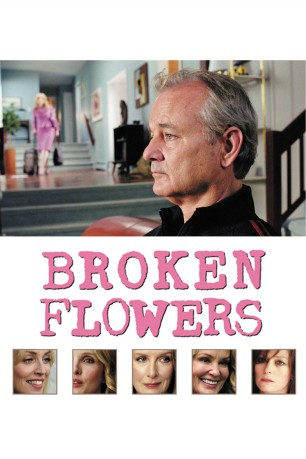

#1456 Broken Flowers
 
 IMDB-Wertung: 7.2 / 10
IMDB-Wertung: 7.2 / 10  Metascore: 79
Metascore: 79 
Der Tag fängt gar nicht gut an für Don Johnston. Erst wird er von seiner sehr viel jüngeren Freundin Sherry verlassen, dann flattert auch noch ein rosafarbener Brief ins Haus. Keine Liebesbotschaft, sondern die späte Quittung für eine frühere Liaison des ergrauten Don Juan: Sein inzwischen 19jähriger Sohn werde ihn aufsuchen, droht die anonyme Schreiberin. Doch wer ist die Mutter? Ginge es allein nach Don - er würde gewiss weiter sein Sofa hüten und die Dinge auf sich zukommen lassen. Aber sein Nachbar Winston kann die lethargische Couchpotato zu detektivischen Nachforschungen überreden. Und so startet Don eher widerwillig und mit rosa Blumen bewaffnet eine aberwitzige Reise in seine Vergangenheit. Vier Frauen in vier verschiedenen Städten kommen als Mutter des unbekannten Sprosses in Betracht.
Jahr: 2005
Dauer: 106 Minuten
FSK: 0
Land: USA Studio: Focus FeaturesTonspuren:
Untertitel:
Auflösung: 720p (1280x696) Größe: 2979 MB
Genre: Komödie, Drama, Mystery, Liebe
Regisseur:  Jim Jarmusch
Jim Jarmusch
Drehbuch: Jim Jarmusch, Bill Raden, Sara Driver
Soundtrack: Mulatu Astatke
Darsteller:
 Bill Murray als Don Johnston
Bill Murray als Don Johnston Julie Delpy als Sherry
Julie Delpy als Sherry- Heather Simms als Mona
 Jeffrey Wright als Winston
Jeffrey Wright als Winston- Meredith Patterson als Flight Attendant
- Nicole Abisinio als Girl on Bus
- Ryan Donowho als Young Man on Bus
 Alexis Dziena als Lolita
Alexis Dziena als Lolita Sharon Stone als Laura
Sharon Stone als Laura Frances Conroy als Dora
Frances Conroy als Dora Christopher McDonald als Ron
Christopher McDonald als Ron Chloë Sevigny als Carmen's Assistant
Chloë Sevigny als Carmen's Assistant Jessica Lange als Carmen
Jessica Lange als Carmen Chris Bauer als Dan
Chris Bauer als Dan Larry Fessenden als Will
Larry Fessenden als Will Tilda Swinton als Penny
Tilda Swinton als Penny Pell James als Sun Green
Pell James als Sun Green Mark Webber als The Kid
Mark Webber als The Kid- Brea Frazier als Rita
- Jarry Fall als Winston and Mona's Kid
- Korka Fall als Winston and Mona's Kid
- Saul Holland als Winston and Mona's Kid
- Zakira Holland als Winston and Mona's Kid
- Niles Lee Wilson als Winston and Mona's Kid
- Jennifer Rapp als Girl on Bus
- Dared Wright als Rabbit Owner
- Suzanne Hevner als Mrs. Dorston
- Brain McPeck als Guy in S.U.V.
- Matthew McAuley als Guy in S.U.V.
- Homer Murray als Kid in Car
- Rachel Puchkoff als Girl in House , uncredited, unconfirmed
Datei: X:\2005(A-F)\Broken Flowers (2005, FSKo.Al., 1280x696).mkv seit 07.07.2015
Festplatte: HD 2003-2004-2005(A-F)
 Es gibt insgesamt 49 Filme in der Gruppe '2005(A-F)'
Es gibt insgesamt 49 Filme in der Gruppe '2005(A-F)'